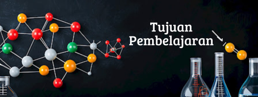

Media Pembelajaran Kimia

Tujuan pembelajaran tentang atom, molekul, dan ion adalah agar siswa dapat memahami perbedaan mendasar antara ketiganya, serta konsep-konsep dasar yang terkait. Siswa diharapkan mampu menjelaskan struktur atom, definisi molekul dan jenisnya (molekul unsur dan molekul senyawa), serta konsep ion dan jenisnya (kation dan anion). Selain itu, siswa juga diharapkan dapat menjelaskan bagaimana atom-atom bergabung membentuk molekul dan bagaimana ion terbentuk.
Berikut adalah tujuan pembelajaran pada setiap materi:
Siswa mampu menjelaskan bahwa atom terdiri dari partikel subatom (proton, neutron, dan elektron) dan bagaimana partikel-partikel ini tersusun dalam atom.
Siswa memahami bahwa proton bermuatan positif, elektron bermuatan negatif, dan neutron tidak bermuatan.
Siswa dapat menjelaskan bahwa atom adalah partikel terkecil dari suatu unsur yang masih memiliki sifat unsur tersebut.
Siswa dapat menjelaskan perkembangan teori atom dari teori atom klasik hingga model atom modern.
Siswa mampu menjelaskan bahwa molekul adalah gabungan dari dua atau lebih atom yang terikat secara kimia.
Siswa dapat menjelaskan bahwa molekul unsur tersusun dari atom-atom sejenis, sedangkan molekul senyawa tersusun dari atom-atom berbeda.
Siswa dapat mengidentifikasi dan memberikan contoh molekul monoatomik dan molekul poliatomik.
Siswa dapat menjelaskan bahwa ion adalah atom atau kelompok atom yang bermuatan listrik.
Siswa dapat menjelaskan bahwa kation adalah ion bermuatan positif (atom kehilangan elektron) dan anion adalah ion bermuatan negatif (atom mendapatkan elektron).
Siswa dapat menjelaskan bagaimana atom dapat kehilangan atau mendapatkan elektron untuk membentuk ion.
Ketiga materi tersebut memiliki keterkaitan atom, molekul, dan ion sehingga siswa diharapkan dapat menjelaskan bagaimana atom-atom bergabung membentuk molekul, dan bagaimana atom-atom dapat berubah menjadi ion. Dan Siswa juga dapat menjelaskan bagaimana perbedaan struktur atom, molekul, dan ion dapat mempengaruhi sifat-sifat fisik dan kimia suatu zat.